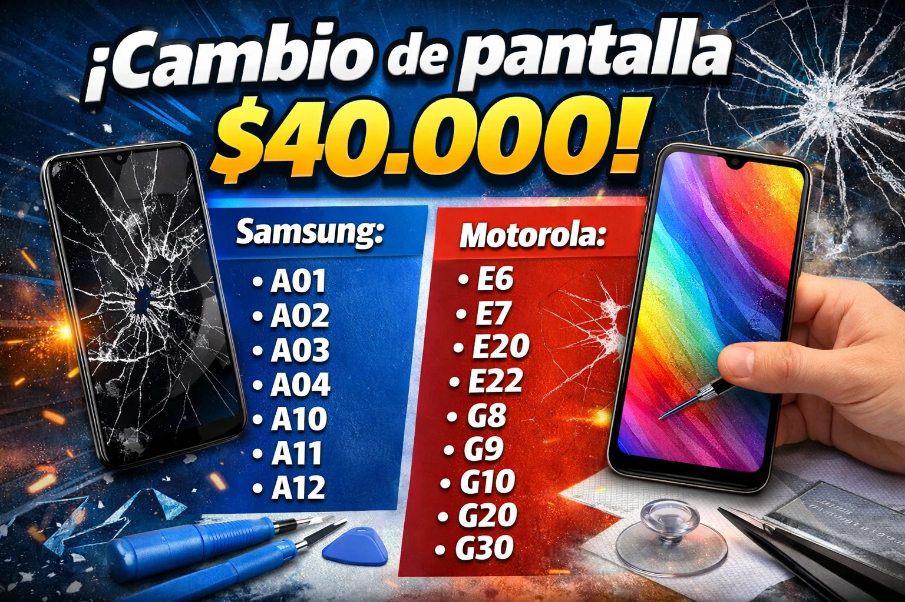
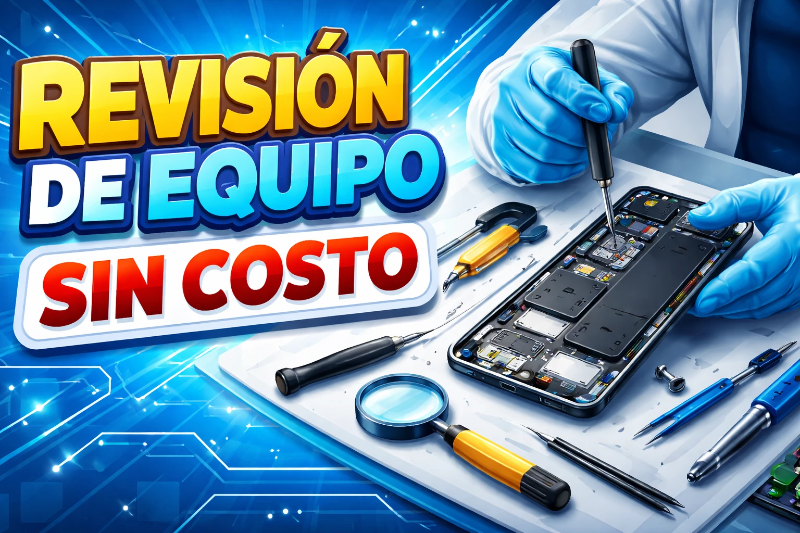

OFERTA
Cambio de pantalla
$40.000
Promoción en modelos seleccionados. Consultanos para confirmar compatibilidad.
Consultar por WhatsAppServicio técnico en Florida 952. Cambio de pantalla, batería y pin de carga.
Escribinos por WhatsAppSi buscás reparación de celulares en Comodoro Rivadavia, cambio de pantalla en Comodoro Rivadavia o arreglo de pin de carga en Comodoro Rivadavia, en GR Tecno te ofrecemos atención directa, asesoramiento y soluciones para distintos modelos Samsung, Motorola, Xiaomi, iPhone y más.
Promociones
Mirá nuestras ofertas y escribinos por WhatsApp para consultar disponibilidad.

$40.000
Promoción en modelos seleccionados. Consultanos para confirmar compatibilidad.
Consultar por WhatsApp$45.000
Solución para equipos con problemas de carga o falso contacto.
Consultar por WhatsApp
Consultá precio
Ideal para equipos que se descargan rápido o ya no rinden bien.
Consultar por WhatsAppNuestros servicios
Trabajamos con reparaciones frecuentes y consultas técnicas para ayudarte a recuperar tu equipo lo antes posible.
Reemplazo de módulos y pantallas dañadas en distintos modelos.
Solución a problemas de carga, falsos contactos y conectores dañados.
Si el equipo dura poco, se apaga o se descarga rápido, lo revisamos.
Revisión general del equipo para detectar fallas y orientar la reparación.
Te guiamos para que sepas qué reparación conviene según el problema.
Fallas de carga, batería, pantalla, conectividad y funcionamiento.
Por qué elegirnos
Estamos en Florida 952 para que puedas acercarte y consultar personalmente.
También atendemos por WhatsApp para coordinar consultas y reparaciones.
Esta web está preparada para posicionar búsquedas como “service celular en Comodoro”.
Ubicación
Si necesitás un técnico de celulares en Comodoro Rivadavia, podés encontrarnos en Florida 952. También podés escribirnos por WhatsApp para consultar precios, disponibilidad y tipo de reparación.
Preguntas frecuentes
Estamos en Florida 952, Comodoro Rivadavia, Chubut.
Trabajamos con pantalla, pin de carga, batería, diagnóstico y otras fallas comunes de celulares.
Podés escribirnos directo por WhatsApp al 2975371657.
Sí, y también otros modelos frecuentes del mercado.
Contacto
Escribinos para consultar por reparación de celulares en Comodoro Rivadavia, precios, disponibilidad y diagnóstico.